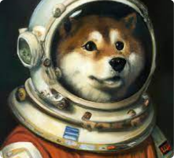
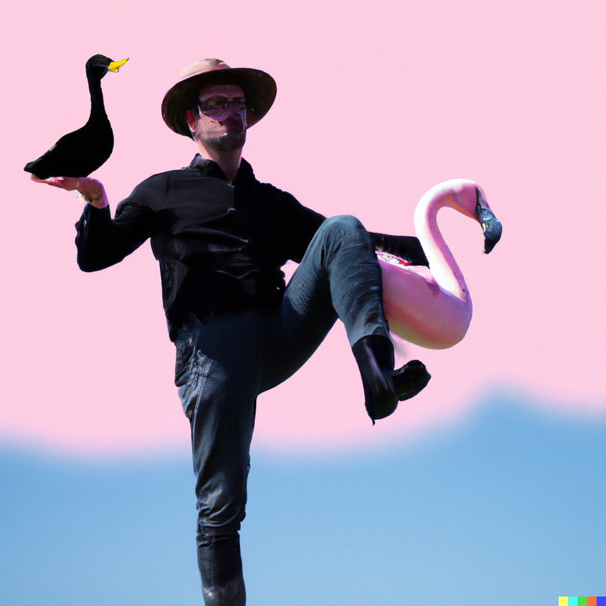

Le machine Learning est une technologie d’intelligence artificielle permettant aux machines d'apprendre sans avoir été au préalablement programmées spécifiquement à cet effet. Depuis peu, des intelligences fonctionnant à l’aide du machine Learning sont apparu. Elles sont devenues connu car elles sont gratuites, facile à utiliser et leurs facultés sont très intéressantes. Se sont Dall•e et Midjourney.
Leurs principes consistent à générer une image à partir d’une description ou de mot que l’utilisateur peut donner. Les données sont traitées et la machine fait des liens entre des centaines de milliers d’image et finis par apporter un résultat digne d’un grand artiste.
Des images tellement bien faites que cela vient à en inquiéter les artistes qui se font surpasser par la technologie.
Exemples
Un chien astronaute
Ce style d’intelligence à besoins du plus possible de détail pour avoir le résultat attendu. Voici un exemple plus poussé qu’il est possible de faire à l’aide d’une intelligence artificielle
Un homme avec un chapeau et canard dans la main qui est dans le ciel, sur un flamant rose qui porte des chaussettes noires
